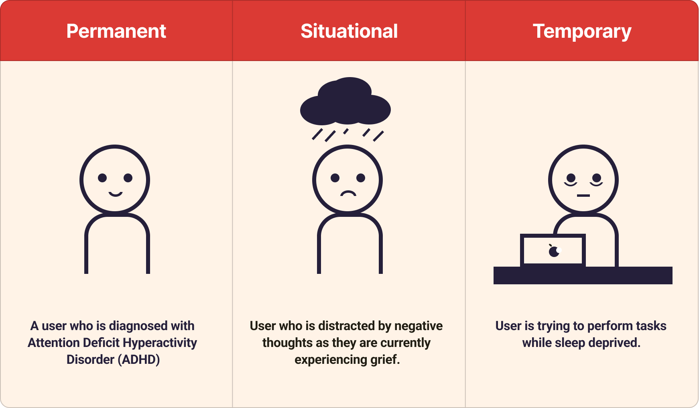

UX/UI DESIGN, USER RESEARCH
Everand redesign for ADHD users
Designing features that improve the experience of using an eBook app, making it more accessible to users with ADHD.
TEAM
Myself
ROLE
Designer
Researcher
TIME
3 weeks
TOOLS
Figma
Background
Everand is a growing digital library app that features much more than
just eBooks and audiobooks. Not everybody who uses a reading app does
so with leisure. Oftentimes, users of these apps are students who are
running on a deadline.
Invisible disabilities are
especially often overlooked when it comes to designing for
accessibility. In this case study, I look at Attention Deficit
Hyperactivity Disorder (ADHD) specifically--a neurodevelopmental
disorder that affects 2.6% of adults worldwide--and find possible
solutions to improve the user experience.
PROBLEM STATEMENT
“How might we make the Everand reading experience more accessible to people with poor attention?"
ADDED FEATURES
Final Prototype


PROCESS
The Journey
The project utilized the Double Diamond method as summarized below.

DISCOVER
Constraint Mapping
I began the Discover stage by doing a Constraint Mapping activity where I brainstormed permanent, situational, and temporary constraints that users of the app may have. These were adopted from Microsoft's Inclusive Design principles.
After mapping various constraints which include physical disabilities such as vision and motor impairment, I decided to redesign for a mental constraint since most accessibility improvements already address physical impairments rather than mental. More specifically, I chose to focus on attention deficit.
DISCOVER
KWHL Chart
Before developing solutions, I needed to gain a deeper understanding of ADHD and how this demographic interacts with technology and reading. I filled out the first three components of a KWHL chart (What I know, need to find, and how I'll be getting the information) to help me get started.
I had to learn about the general, app-specific, and reading-specific challenges ADHD users face. In addition to this, I wanted to find out about accessibiity features that could be helpful to them. I decided to collect information through a user interview, observation, and secondary research sources.
DISCOVER
Research
An individual with diagnosed ADHD was recruited to participate in a semi-structured interview. I asked questions regarding their general experience living with ADHD. This was followed by an exploration of the Everand app and a ten minute task to read the first chapter of a novel of their choice. Afterwards, questions were asked about the experience they just had with the app. Below is an anonymized summary of the interview's key points.
Interview Summary
- User's experience with ADHD
- Struggles with tasks that take a prolonged period of time or if they aren't awarded immediately.
- Participant talks about how he manages his ADHD through a planner/checklist, sticking to a routine, and the pressure of time.
- User's experience with Everand
- Finds it easy to navigate due to prior experience with apps.
- Found spacing between words to be weird and mentioned how there's no tutorial.
- Had some difficulty completing the reading task and said they prefer reading a physical book due to less distractions.
- Desired Features
- Suggests a feature where you get rewarded for your reading progress
- Suggests highlighting parts of the page/book that you've already read. This would act as a checklist, allowing the user to feel accomplished
User Observation
As the user was performing the reading task, I observed their behaviour and took notes. These notes were then put into a Spradley's Matrix. This data along with the interview results are analyzed in conjunction with the secondary research to draw insights. View the Spradley's Matrix →
Secondary Research
Scholarly articles related to ADHD, reading, and acessibility were read. Literature reviews of these articles were made and my key findings are as follows:
- Individuals with attention deficit have poor reading comprehension when reading digitally which is correlated to their decreased sustained attention (Ben-Yehudah and Brann; Stern et al.).
- Text-to-speech may assist people with ADHD understand what they are reading more clearly and have less problems with reading in general (Kyriakaki and Driga 207).
- Reading aids such as reading guides and highlights help people with ADHD concentrate on one line of text at a time, minimizing visual distractions and improving reading comprehension and tracking (Kyriakaki and Driga 207).
- Apps that use strategies including gamification, interactive activities, and audiovisual stimulation provide an organized and encouraging environment for people with ADHD to develop they attention skills by including elements like progress tracking and incentives (Kyriakaki and Driga 208).
DEFINE
Personas
Using data from all research sources about ADHD, I developed three personas to capture each type of contstraint (permanent, temporary, and situational) centered around attention deficit. Each persona can be viewed by using the dot indicator below.


DEFINE
Proposed Solution
Analyzing research and creating personas allowed me to develop a possible solution to solving the users’ mismatched interaction.
A venn diagram including all of the possible solutions gathered from each source of research is created. Here, I can hone in on which features are more necessary which have been highlighted in yellow. Although the tutorial was only mentioned on one side, I felt that it should be considered since it increases user-friendliness. According to an NNGroup article, icons weren't sufficient in letting users know what features were available and therefore a tutorial may be a good idea to implement.

DEFINE
UI Style Guide
As part of the process, I analyzed the styling of the Everand app in order to adapt my features in. Below is a summarized style guide.

DEVELOP
Wireframes
Wireframes were created utilizing the style guide. Low-fidelity wireframes were made first and then later shown to the same participant for feedback. High-fidelity wireframes were optimized based on feedback. In the end, a total of 36 screens were created in order to get the final prototype working.
Low-fidelity

High-fidelity

DELIVER
Reflection
Mental disabilities shouldn't be considered less important just because we can't see them. We as designers must consider all possible usability challenges ours users face. Through this project, I gained a better understanding of users with ADHD by working closely with one. This way, I was able to become empathetic with their personal experiences. This project reinforced the importance of research and working with users to reach a solution. Without doing the preliminary research, my solutions would have been totally different.